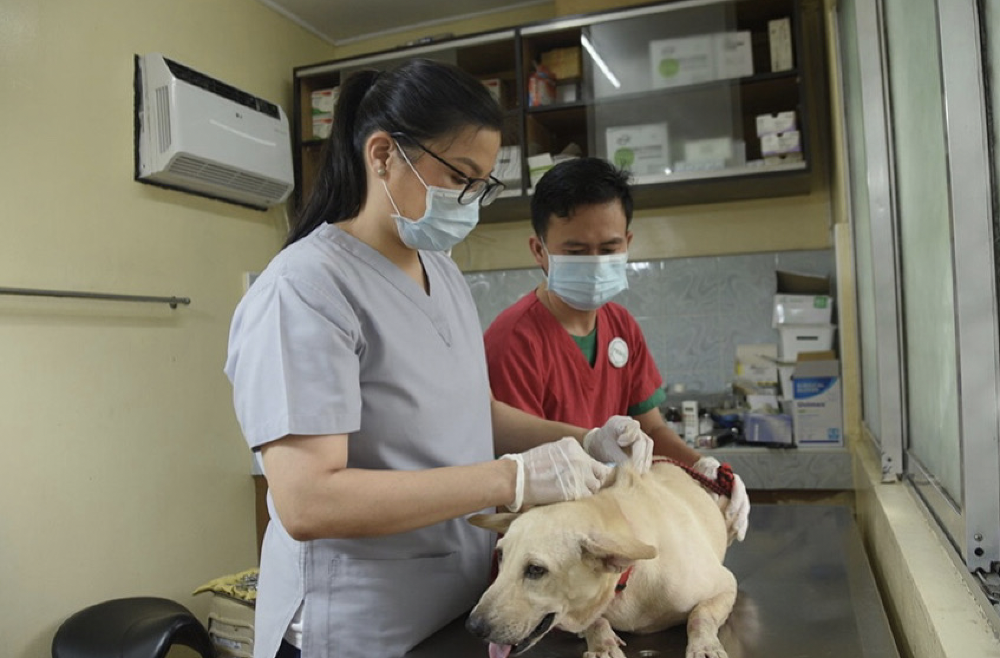
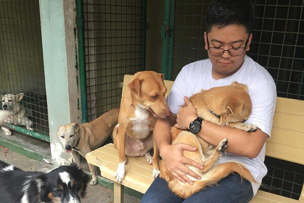
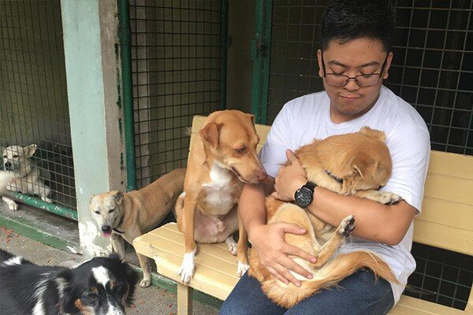

"Give a little love and stay for strays—because every dog deserves a home and a heart that cares."
About
Welcome to Stay for Strays, a passionate advocacy dedicated to improving the lives of stray dogs. Our mission is to provide shelter, medical care, and loving homes to dogs that have been abandoned, neglected, or born on the streets. We believe every dog deserves a second chance at a happy and healthy life.
Founded in 2020, Stay for Strays has rescued over 500 dogs, offering them a safe haven and the care they need to thrive. Our team of dedicated volunteers works tirelessly to rescue, rehabilitate, and rehome stray dogs, ensuring they find their forever families. We also focus on community outreach, education, and spay/neuter programs to address the root causes of stray dog populations.
We envision a world where no dog is left to suffer on the streets. Join us in our mission to make a difference, one paw at a time. Whether through adoption, volunteering, or donations, your support helps us save lives and give these wonderful animals the love and care they deserve.

How's it going?

 

We have been active for the past years as we have held activities, seminars, fundraising activities to help support our advocacy
How to help?
Your support is crucial to our mission. Here are several ways you can help us make a difference in the lives of stray dogs:
Adopt
Give a stray dog a loving home. Check our adoption page to see the dogs currently available for adoption.
Volunteer
Join our team of dedicated volunteers. We need help with dog care, events, outreach programs, and more.
Donate
Your donations directly support our rescue operations, medical treatments, and shelter maintenance. Every contribution, big or small, makes a significant impact.
Foster
Provide temporary care for a dog in need. Fostering helps us free up space to rescue more dogs.
Click the image to be redirected to the sign up form!